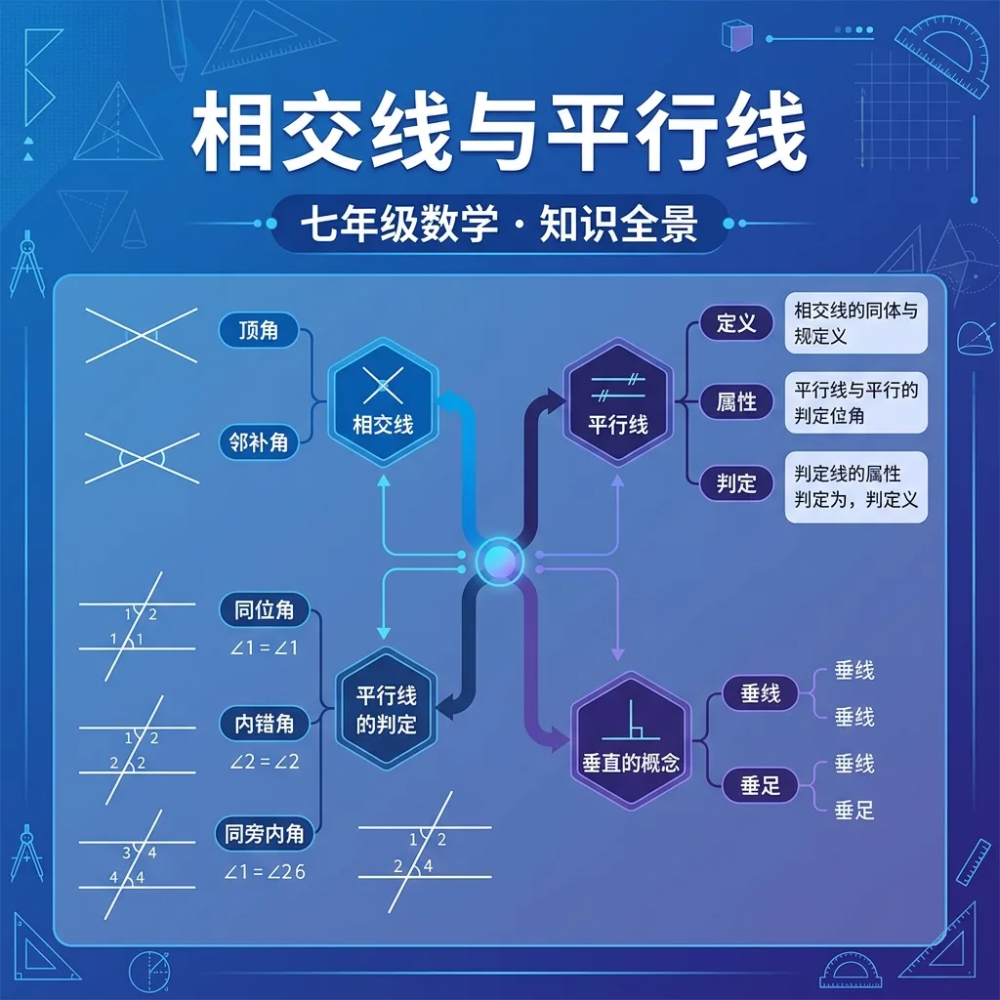

1. 两条直线相交形成几个角？
2. 互补的两个角之和为？
3. 平行线的符号是？
两直线相交，位置相对的两个角。
性质：对顶角相等（∠1=∠3，∠2=∠4）
相邻的两个角（共用一条边）。
性质：邻补角互补（相加=180°）
🏋️ 即时练习：两直线相交，若其中一个角为 70°，则它的对顶角为？
🏋️ 即时练习：若一个角为 70°，则它的邻补角为？
同位角
在截线同侧，位置相同（如都在截线左上方）
内错角
在两线之间，截线两侧（形状像"Z"）
同旁内角
在两线之间，截线同侧（形状像"U"）
🏋️ 即时练习：内错角位于截线的哪个位置？
① 同位角相等 → 两直线平行（简写：同位角相等，两直线平行）
② 内错角相等 → 两直线平行
③ 同旁内角互补（和为180°）→ 两直线平行
① 两直线平行 → 同位角相等
② 两直线平行 → 内错角相等
③ 两直线平行 → 同旁内角互补
🏋️ 即时练习：已知 a∥b，同位角 ∠1 = 65°，则 ∠2 = ？（∠1 和 ∠2 是同位角）
已知 a∥b，截线 c 与 a、b 相交，形成角 ∠1=50°（∠1 在直线 a 上方，截线 c 右侧）。
1. 对顶角的性质是？
2. 若同旁内角之和为 180°，则两直线？
3. 已知 a∥b，截线与 a 所成内错角为 75°，则截线与 b 所成内错角为？
4. 若两直线被截线截，内错角相等，则这两条直线？
相交线是指在同一平面内，有且只有一个公共点的两条直线。这个公共点称为交点。相交线的基本性质包括：两条相交线将平面分成四个角，相邻角互补（和为180度），对顶角相等。例如，十字路口的道路可以看作两条相交线，交点就是十字路口的中心点。在数学中，我们常用符号表示相交线，如直线AB与直线CD相交于点O。相交线的概念是几何学中最基础的概念之一，理解它对于后续学习平行线、垂直线等知识至关重要。
对顶角是指两条直线相交时，位于交点两侧且不相邻的两个角。对顶角的一个重要性质是它们的大小相等。例如，在字母X中，上下两个角是对顶角，左右两个角也是对顶角，它们的大小相等。在实际生活中，剪刀的两个刀刃张开时形成的角也是对顶角。对顶角的性质在几何证明中经常用到，例如证明两条直线平行时，可以通过对顶角的相等关系来推导。理解对顶角的概念和性质，有助于学生更好地掌握几何图形中的角度关系。
邻补角是指两条直线相交时，位于交点同一侧且相邻的两个角。邻补角的性质是它们的和为180度，即互补。例如，在时钟上，时针和分针在3点和9点位置时形成的两个角就是邻补角。在几何图形中，邻补角的性质常用于计算未知角度。例如，如果已知一个邻补角是60度，那么另一个邻补角就是120度。邻补角的概念在解决实际问题时非常有用，比如在设计建筑物时，需要计算各个角度的互补关系以确保结构的稳定性。
平行线是指在同一平面内，永不相交的两条直线。平行线的判定方法有多种，包括同位角相等、内错角相等、同旁内角互补等。例如，铁轨的两条轨道就是平行线的典型例子，它们始终保持相同的距离，永不相交。在数学中，我们常用符号∥表示平行，如直线AB∥直线CD。平行线的性质在几何学中非常重要，它们不仅存在于平面图形中，还在空间几何中有广泛的应用。理解平行线的定义和判定方法，有助于学生在解决几何问题时更加得心应手。
同位角是指两条直线被第三条直线（称为横截线）所截时，位于横截线同一侧且在两条直线同一侧的两个角。同位角的性质是当两条直线平行时，同位角相等。例如，在字母F中，上下两个角就是同位角。在实际生活中，楼梯的台阶与地面的夹角也可以看作同位角。同位角的性质在证明两条直线平行时非常有用，例如，如果已知同位角相等，那么可以推断两条直线平行。理解同位角的概念和性质，有助于学生更好地掌握平行线的判定方法。
内错角是指两条直线被第三条直线（横截线）所截时，位于横截线两侧且在两条直线内部的两个角。内错角的性质是当两条直线平行时，内错角相等。例如，在字母Z中，两个锐角就是内错角。在实际生活中，书架的隔板与侧板的夹角也可以看作内错角。内错角的性质在几何证明中经常用到，例如，如果已知内错角相等，那么可以推断两条直线平行。理解内错角的概念和性质，有助于学生在解决几何问题时更加灵活地运用平行线的判定方法。
同旁内角是指两条直线被第三条直线（横截线）所截时，位于横截线同一侧且在两条直线内部的两个角。同旁内角的性质是当两条直线平行时，同旁内角互补（和为180度）。例如，在字母U中，两个底角就是同旁内角。在实际生活中，门框与门扇的夹角也可以看作同旁内角。同旁内角的性质在几何证明中非常有用，例如，如果已知同旁内角互补，那么可以推断两条直线平行。理解同旁内角的概念和性质，有助于学生更好地掌握平行线的判定方法。
平行线的性质包括：平行线永不相交、平行线间的距离处处相等、平行线被横截线所截时，同位角相等、内错角相等、同旁内角互补。这些性质在几何学中有广泛的应用。例如，在建筑设计中，平行线的性质用于确保墙壁的平行和垂直；在地图绘制中，平行线用于表示等高线。在数学中，平行线的性质常用于证明几何命题，如证明三角形的相似性。理解平行线的性质和应用，有助于学生在解决实际问题时更加灵活地运用几何知识。
垂线是两条直线相交成直角时的特殊相交线。垂线具有以下重要性质：1. 两条直线互相垂直时，其中一条称为另一条的垂线；2. 过直线外一点有且只有一条垂线；3. 垂线段最短。生活中常见的例子包括：建筑物的墙面与地面垂直、十字路口的道路垂直相交。在几何作图中，我们常用三角板画垂线。例如要过点P作直线l的垂线，可将三角板的直角边对齐l，另一边通过P点画线。垂线在工程测量中也很重要，如确定建筑物的垂直度时就需要使用铅垂线。
判断两条直线平行有五种常用方法：1. 同位角相等；2. 内错角相等；3. 同旁内角互补；4. 平行于同一直线；5. 垂直于同一直线。例如教室里的日光灯管，如果它们都与地面平行，那么这些灯管之间也互相平行。在数学证明中，我们常用角度关系判定平行。比如要证明AB∥CD，可以找一条截线EF，若测得同位角∠1=∠2=45°，则根据"同位角相等，两直线平行"的定理可得出结论。生活中铁轨的设计必须保持平行，否则会导致列车脱轨，这体现了平行线在实际应用中的重要性。
1. 两条直线相交时，形成的对顶角有什么性质？2. 如何判断两条直线是否平行？3. 邻补角的和是多少度？
1. 已知两条直线被横截线所截，同位角相等，这两条直线是什么关系？2. 如果两条平行线被横截线所截，同旁内角的和是多少度？3. 在字母X中，对顶角的大小关系是什么？
错因：学生容易混淆同位角、内错角和同旁内角的概念。误区：认为只要两条直线被横截线所截，同位角就一定相等。诊断：需要通过具体的图形和例子，帮助学生清晰区分这三种角的概念和性质。
迁移挑战：设计一个实际生活中的场景，利用平行线的性质解释其中的几何关系。例如，分析自行车车轮的辐条如何保持平行，并说明其重要性。